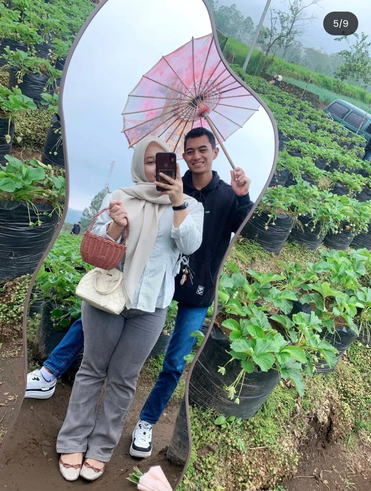
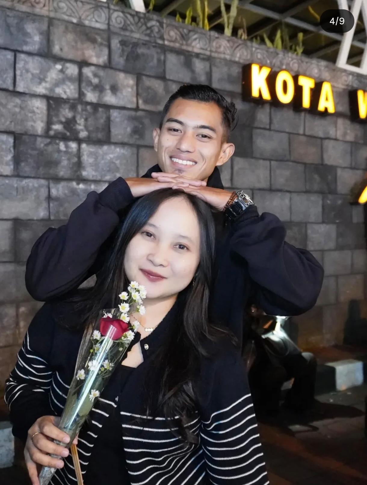

Jadwal Lengkap
Akad Nikah
Minggu, 24 mei 2026
⏰ Jam 08.00 - 10.00 WIB
📍 Masjid Al-Hidayah, Jl. Sudirman No. 123
Jakarta Selatan
Resepsi
Senin, 25 mei 2026
⏰ Jam 11.00 - 14.00 WIB
📍 Hotel Grand Hyatt Jakarta
Jl. M.H. Thamrin Kav. 28-30
Dengan restu orang tua & rahmat Allah SWT


Minggu, 24 mei 2026
⏰ Jam 08.00 - 10.00 WIB
📍 Masjid Al-Hidayah, Jl. Sudirman No. 123
Jakarta Selatan
Senin, 25 mei 2026
⏰ Jam 11.00 - 14.00 WIB
📍 Hotel Grand Hyatt Jakarta
Jl. M.H. Thamrin Kav. 28-30